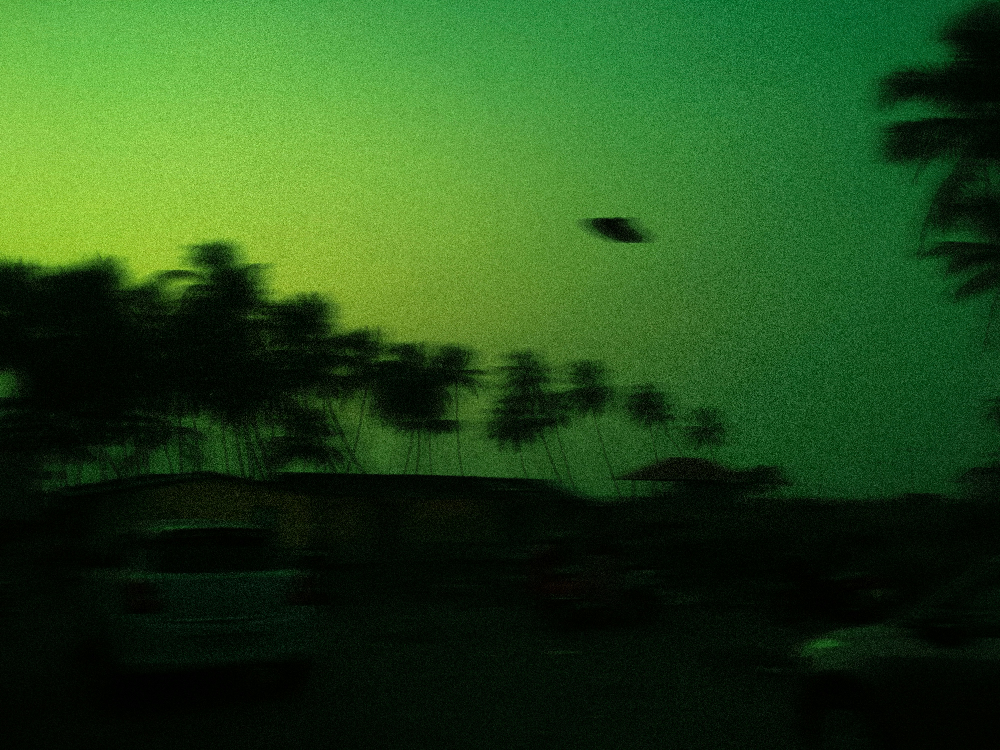

Aliens Land in the School Parking Lot
At exactly 10:42 this morning, a silver craft roughly the size of a school bus touched down between rows 4 and 5 of the student parking lot. Classes were interrupted as a low humming sound rattled the windows of the science wing and set off every car alarm in the lot. Within minutes, students and staff had crowded against the second-floor windows to watch three tall figures step onto the pavement.

Alien Ship Landing
Eye Witness Accounts
Junior Marcus Delgado, who was heading to his car for a forgotten calculator, says he was the closest person to the landing site. He described the visitors as nearly seven feet tall, pale green, and dressed in what looked like reflective raincoats. According to Marcus, one of them pointed at his 2003 sedan, made a sound like a dial-up modem, and then carefully placed a small metal cube on the hood before walking away.
Other witnesses reported similar details, though accounts differ on exactly what happened next. Ms. Whitaker, who teaches third-period chemistry, insists the visitors bowed politely toward the flagpole before returning to their craft. Several students in the cafeteria claim the aliens took roughly forty photographs of the vending machines, which has since become the subject of considerable debate online.
Official Government Statement
By noon, three unmarked vehicles had arrived and a spokesperson addressed reporters from the front steps of the building. The statement described the incident as a "routine atmospheric survey" and asked the public to remain calm while officials review the situation. When asked whether the metal cube left on the sedan would be returned to its owner, the spokesperson said only that the matter was under active review and declined to take further questions.

Photo of the goverment meeting